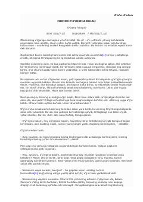

GGKeksa buvi va o'g'ri o'rtasidagi hayotiy suhbat — G'afur G'ulomdan klassik hikoya.
G'afur G'ulomning 'Mening o'g'rigina bolam' asari to'rt yetim nabirasi bilan qolgan keksa buvining kechasi tomga chiqqan o'g'ri bilan qilgan samimiy suhbatini tasvirlaydi. Hikoyada 1917-yillar Turkistondagi og'ir hayot, qashshoqlik va odamlarning tirikchilik uchun kurashi realistik tarzda aks ettirilgan. Asar insoniy mehr va nochorlik mavzularini yumoristik va ta'sirchan uslubda yoritadi.